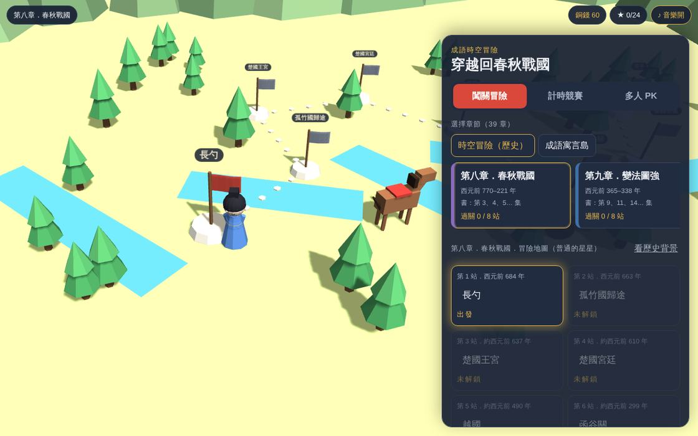
39章
時空冒險
從周朝、春秋戰國、秦漢、三國，一路走到唐宋元明清。每章先介紹時代背景和重要人物，再一站一站闖關。
- 春秋霸主、楚漢相爭、三顧茅廬
- 每站標出年代和地點，看得到歷史的先後
每一站都是一段真實的歷史或寓言。先看故事，再用成語解決問題，最後聽一段小講堂，把成語的來歷和用法記起來。
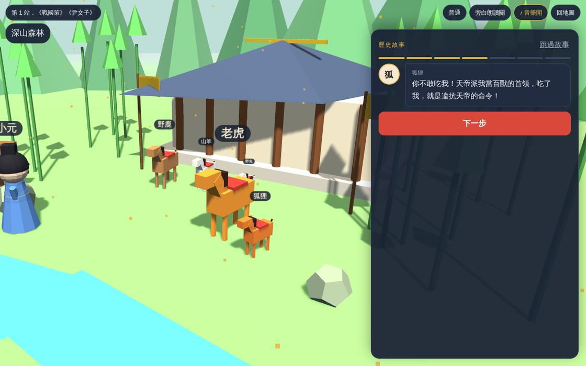
第一步3D 場景裡，人物走動、對話，旁白一句一句念給你聽。這一站演的是〈狐假虎威〉。
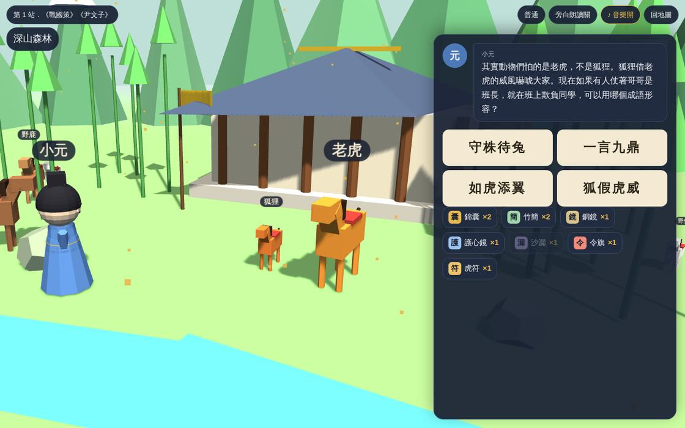
第二步故事停在關鍵時刻，從四個成語裡挑出對的那一個。選錯了，故事人物會跳出來吐槽、告訴你差在哪。
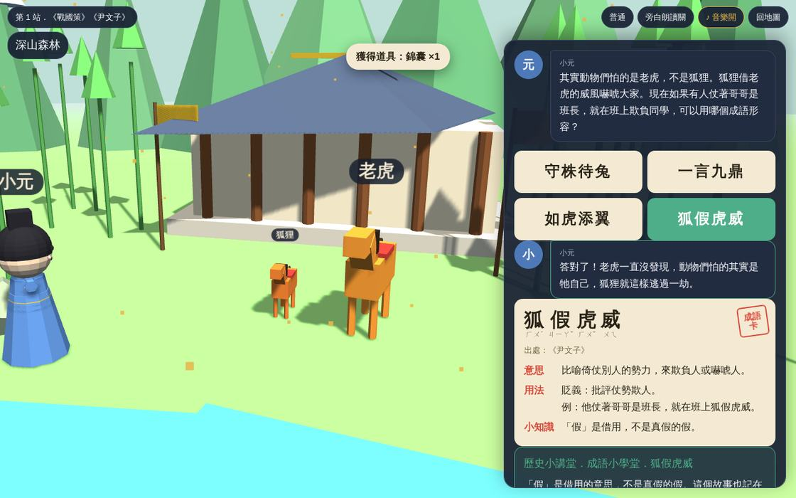
第三步答對就拿到成語卡：注音、出處、意思、用法、例句，還有四格漫畫和朗讀，一張一張收進「我的成語書」。
想照年代走一遍中國歷史，還是去寓言島聽動物講道理？兩條路線都能隨時切換。

從周朝、春秋戰國、秦漢、三國，一路走到唐宋元明清。每章先介紹時代背景和重要人物，再一站一站闖關。
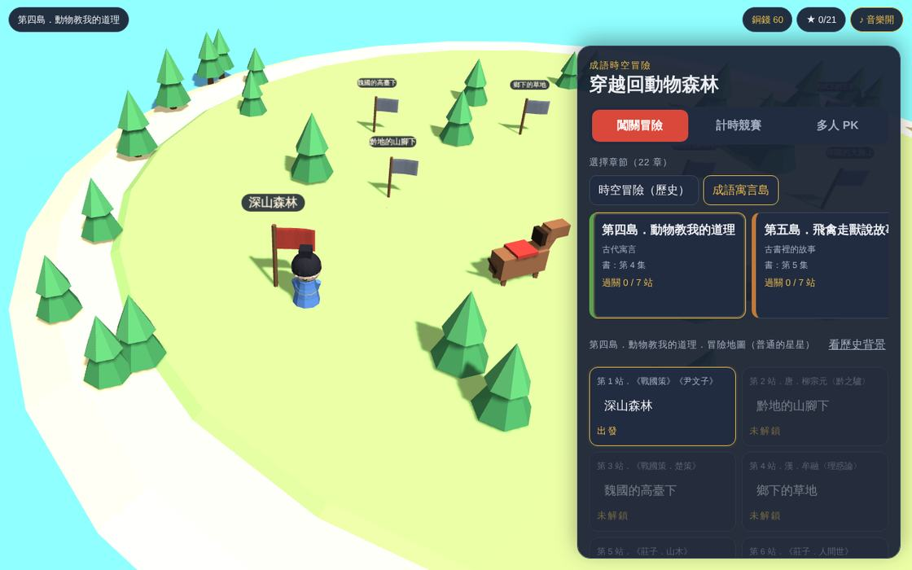
《莊子》《韓非子》《論語》《孟子》《詩經》、孫子兵法和神話傳說，一座島一本書。
軍營、宮殿、竹林、江邊、雪地茅屋，人物和動物都會動。
故事和成語都有朗讀，還不太會認字的小朋友也能跟著玩。
闖關冒險、計時競賽，還有 2～4 人同一台裝置一起玩的多人 PK：輪流答題或搶答對決。
從入門到大師，選項數、提示和計時都不一樣。
闖關賺銅錢，買錦囊、竹簡、護心鏡、虎符等 8 種道具，關鍵時刻幫你一把。
每個成語都配一則四格漫畫，和《成語原來是這樣來的》書裡同一套畫。
遊戲裡的 480 個成語，全部來自《成語原來是這樣來的》60 集有聲漫畫。每張卡都整理好注音、出處、意思、用法和例句，玩過一輪，等於把整套書的成語都複習了一遍。
錯過的題目可以重玩，拿到三顆星才算真正學會。
成語不是死背的四個字。先看到典故怎麼發生，孩子自然記得意思，也知道什麼時候用。
時空冒險照年代排列，每站標出年代和地點，順便把朝代先後串起來。
多人 PK 最多 4 人，用同一台平板或投影就能比賽，適合班級活動和親子時間。
打開網址就能玩，手機、平板、電腦都可以。進度自動存在這台裝置上。
《成語原來是這樣來的》有聲漫畫共 60 集，每集 8 個成語，四格漫畫加朗讀，電子書陸續上架中。
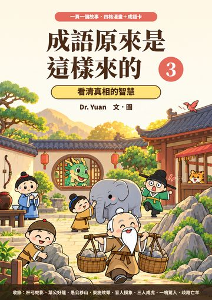
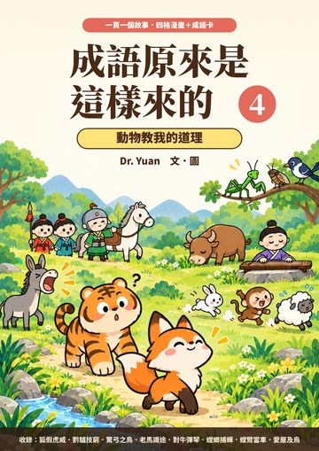
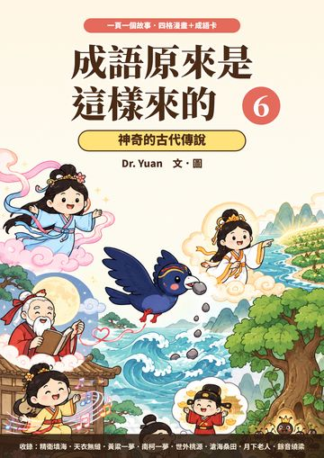
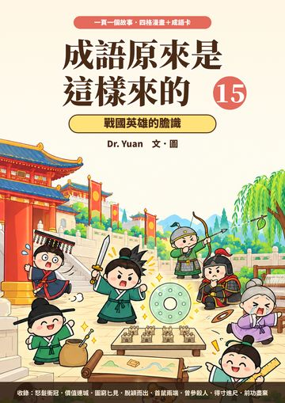
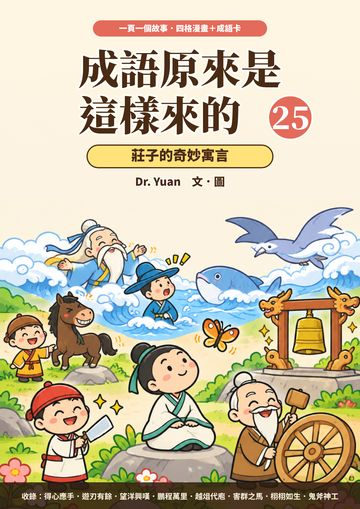
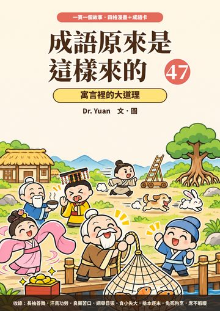
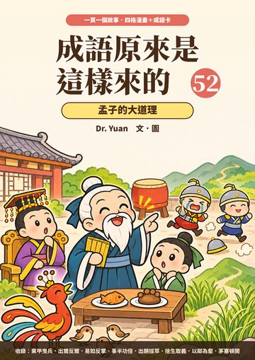
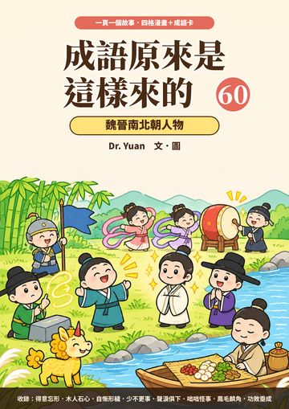